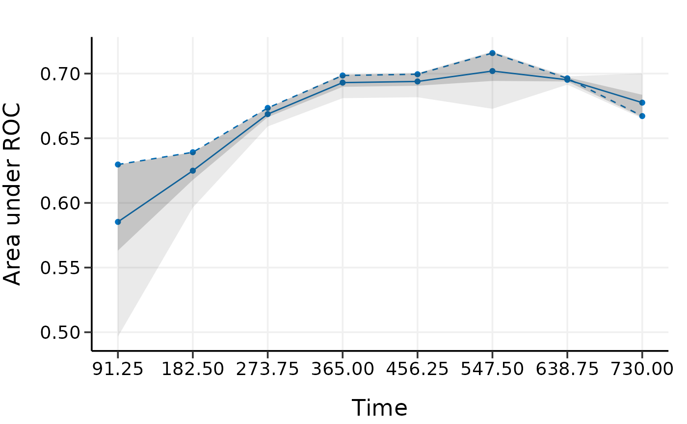
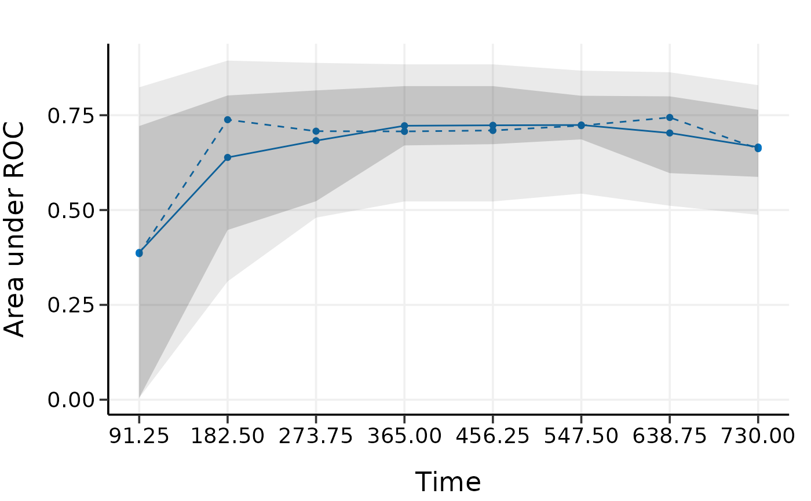

Validate high-dimensional Cox models with time-dependent AUC
Usage
validate(
x,
time,
event,
model.type = c("lasso", "alasso", "flasso", "enet", "aenet", "mcp", "mnet", "scad",
"snet"),
alpha,
lambda,
pen.factor = NULL,
gamma,
lambda1,
lambda2,
method = c("bootstrap", "cv", "repeated.cv"),
boot.times = NULL,
nfolds = NULL,
rep.times = NULL,
tauc.type = c("CD", "SZ", "UNO"),
tauc.time,
seed = 1001,
trace = TRUE
)Arguments
- x
Matrix of training data used for fitting the model; on which to run the validation.
- time
Survival time. Must be of the same length with the number of rows as
x.- event
Status indicator, normally 0 = alive, 1 = dead. Must be of the same length with the number of rows as
x.- model.type
Model type to validate. Could be one of
"lasso","alasso","flasso","enet","aenet","mcp","mnet","scad", or"snet".- alpha
Value of the elastic-net mixing parameter alpha for
enet,aenet,mnet, andsnetmodels. Forlasso,alasso,mcp, andscadmodels, please setalpha = 1.alpha=1: lasso (l1) penalty;alpha=0: ridge (l2) penalty. Note that formnetandsnetmodels,alphacan be set to very close to 0 but not 0 exactly.- lambda
Value of the penalty parameter lambda to use in the model fits on the resampled data. From the fitted Cox model.
- pen.factor
Penalty factors to apply to each coefficient. From the fitted adaptive lasso or adaptive elastic-net model.
- gamma
Value of the model parameter gamma for MCP/SCAD/Mnet/Snet models.
- lambda1
Value of the penalty parameter lambda1 for fused lasso model.
- lambda2
Value of the penalty parameter lambda2 for fused lasso model.
- method
Validation method. Could be
"bootstrap","cv", or"repeated.cv".- boot.times
Number of repetitions for bootstrap.
- nfolds
Number of folds for cross-validation and repeated cross-validation.
- rep.times
Number of repeated times for repeated cross-validation.
- tauc.type
Type of time-dependent AUC. Including
"CD"proposed by Chambless and Diao (2006).,"SZ"proposed by Song and Zhou (2008).,"UNO"proposed by Uno et al. (2007).- tauc.time
Numeric vector. Time points at which to evaluate the time-dependent AUC.
- seed
A random seed for resampling.
- trace
Logical. Output the validation progress or not. Default is
TRUE.
References
Chambless, L. E. and G. Diao (2006). Estimation of time-dependent area under the ROC curve for long-term risk prediction. Statistics in Medicine 25, 3474–3486.
Song, X. and X.-H. Zhou (2008). A semiparametric approach for the covariate specific ROC curve with survival outcome. Statistica Sinica 18, 947–965.
Uno, H., T. Cai, L. Tian, and L. J. Wei (2007). Evaluating prediction rules for t-year survivors with censored regression models. Journal of the American Statistical Association 102, 527–537.
Examples
data(smart)
x <- as.matrix(smart[, -c(1, 2)])[1:500, ]
time <- smart$TEVENT[1:500]
event <- smart$EVENT[1:500]
y <- survival::Surv(time, event)
fit <- fit_lasso(x, y, nfolds = 5, rule = "lambda.1se", seed = 11)
# Model validation by bootstrap with time-dependent AUC
# Normally boot.times should be set to 200 or more,
# we set it to 3 here only to save example running time.
val.boot <- validate(
x, time, event,
model.type = "lasso",
alpha = 1, lambda = fit$lambda,
method = "bootstrap", boot.times = 3,
tauc.type = "UNO", tauc.time = seq(0.25, 2, 0.25) * 365,
seed = 1010
)
#> Start bootstrap sample 1
#> Start bootstrap sample 2
#> Start bootstrap sample 3
# Model validation by 5-fold cross-validation with time-dependent AUC
val.cv <- validate(
x, time, event,
model.type = "lasso",
alpha = 1, lambda = fit$lambda,
method = "cv", nfolds = 5,
tauc.type = "UNO", tauc.time = seq(0.25, 2, 0.25) * 365,
seed = 1010
)
#> Start fold 1
#> Start fold 2
#> Start fold 3
#> Start fold 4
#> Start fold 5
# Model validation by repeated cross-validation with time-dependent AUC
val.repcv <- validate(
x, time, event,
model.type = "lasso",
alpha = 1, lambda = fit$lambda,
method = "repeated.cv", nfolds = 5, rep.times = 3,
tauc.type = "UNO", tauc.time = seq(0.25, 2, 0.25) * 365,
seed = 1010
)
#> Start repeat round 1 fold 1
#> Start repeat round 1 fold 2
#> Start repeat round 1 fold 3
#> Start repeat round 1 fold 4
#> Start repeat round 1 fold 5
#> Start repeat round 2 fold 1
#> Start repeat round 2 fold 2
#> Start repeat round 2 fold 3
#> Start repeat round 2 fold 4
#> Start repeat round 2 fold 5
#> Start repeat round 3 fold 1
#> Start repeat round 3 fold 2
#> Start repeat round 3 fold 3
#> Start repeat round 3 fold 4
#> Start repeat round 3 fold 5
# bootstrap-based discrimination curves has a very narrow band
print(val.boot)
#> High-Dimensional Cox Model Validation Object
#> Random seed: 1010
#> Validation method: bootstrap
#> Bootstrap samples: 3
#> Model type: lasso
#> glmnet model alpha: 1
#> glmnet model lambda: 0.1182981
#> glmnet model penalty factor: not specified
#> Time-dependent AUC type: UNO
#> Evaluation time points for tAUC: 91.25 182.5 273.75 365 456.25 547.5 638.75 730
summary(val.boot)
#> Time-Dependent AUC Summary at Evaluation Time Points
#> 91.25 182.5 273.75 365 456.25 547.5 638.75
#> Mean 0.5853199 0.6249183 0.6686747 0.6930277 0.6939214 0.7019696 0.6952237
#> Min 0.4965657 0.5963733 0.6591369 0.6809984 0.6817096 0.6727704 0.6914517
#> 0.25 Qt. 0.5631313 0.6177748 0.6662872 0.6897655 0.6906126 0.6943256 0.6938939
#> Median 0.6296970 0.6391763 0.6734375 0.6985327 0.6995156 0.7158808 0.6963360
#> 0.75 Qt. 0.6296970 0.6391909 0.6734437 0.6990424 0.7000273 0.7165691 0.6971097
#> Max 0.6296970 0.6392054 0.6734499 0.6995521 0.7005390 0.7172574 0.6978834
#> 730
#> Mean 0.6775340
#> Min 0.6653434
#> 0.25 Qt. 0.6662506
#> Median 0.6671579
#> 0.75 Qt. 0.6836292
#> Max 0.7001006
plot(val.boot)
#> 91.25 182.5 273.75 365 456.25 547.5 638.75
#> Mean 0.5853199 0.6249183 0.6686747 0.6930277 0.6939214 0.7019696 0.6952237
#> Min 0.4965657 0.5963733 0.6591369 0.6809984 0.6817096 0.6727704 0.6914517
#> 0.25 Qt. 0.5631313 0.6177748 0.6662872 0.6897655 0.6906126 0.6943256 0.6938939
#> Median 0.6296970 0.6391763 0.6734375 0.6985327 0.6995156 0.7158808 0.6963360
#> 0.75 Qt. 0.6296970 0.6391909 0.6734437 0.6990424 0.7000273 0.7165691 0.6971097
#> Max 0.6296970 0.6392054 0.6734499 0.6995521 0.7005390 0.7172574 0.6978834
#> 730
#> Mean 0.6775340
#> Min 0.6653434
#> 0.25 Qt. 0.6662506
#> Median 0.6671579
#> 0.75 Qt. 0.6836292
#> Max 0.7001006

# k-fold cv provides a more strict evaluation than bootstrap
print(val.cv)
#> High-Dimensional Cox Model Validation Object
#> Random seed: 1010
#> Validation method: k-fold cross-validation
#> Cross-validation folds: 5
#> Model type: lasso
#> glmnet model alpha: 1
#> glmnet model lambda: 0.1182981
#> glmnet model penalty factor: not specified
#> Time-dependent AUC type: UNO
#> Evaluation time points for tAUC: 91.25 182.5 273.75 365 456.25 547.5 638.75 730
summary(val.cv)
#> Time-Dependent AUC Summary at Evaluation Time Points
#> 91.25 182.5 273.75 365 456.25 547.5 638.75
#> Mean 0.3871268 0.5553328 0.6603796 0.7094117 0.7108955 0.7166735 0.7087837
#> Min 0.0050000 0.0050000 0.4141414 0.5105351 0.5105351 0.5430566 0.4794722
#> 0.25 Qt. 0.0050000 0.3359944 0.5095475 0.6848001 0.6848001 0.6925183 0.6925183
#> Median 0.2882653 0.7065967 0.7065967 0.7047705 0.7121891 0.6965153 0.7609198
#> 0.75 Qt. 0.7878788 0.8450521 0.8052632 0.8052632 0.8052632 0.8046595 0.8046595
#> Max 0.8494898 0.8840206 0.8663490 0.8416897 0.8416897 0.8466179 0.8063486
#> 730
#> Mean 0.6679114
#> Min 0.4794722
#> 0.25 Qt. 0.6798159
#> Median 0.6826454
#> 0.75 Qt. 0.6925183
#> Max 0.8051053
plot(val.cv)
#> 91.25 182.5 273.75 365 456.25 547.5 638.75
#> Mean 0.3871268 0.5553328 0.6603796 0.7094117 0.7108955 0.7166735 0.7087837
#> Min 0.0050000 0.0050000 0.4141414 0.5105351 0.5105351 0.5430566 0.4794722
#> 0.25 Qt. 0.0050000 0.3359944 0.5095475 0.6848001 0.6848001 0.6925183 0.6925183
#> Median 0.2882653 0.7065967 0.7065967 0.7047705 0.7121891 0.6965153 0.7609198
#> 0.75 Qt. 0.7878788 0.8450521 0.8052632 0.8052632 0.8052632 0.8046595 0.8046595
#> Max 0.8494898 0.8840206 0.8663490 0.8416897 0.8416897 0.8466179 0.8063486
#> 730
#> Mean 0.6679114
#> Min 0.4794722
#> 0.25 Qt. 0.6798159
#> Median 0.6826454
#> 0.75 Qt. 0.6925183
#> Max 0.8051053
# repeated cv provides similar results as k-fold cv
# but more robust than k-fold cv
print(val.repcv)
#> High-Dimensional Cox Model Validation Object
#> Random seed: 1010
#> Validation method: repeated cross-validation
#> Cross-validation folds: 5
#> Cross-validation repeated times: 3
#> Model type: lasso
#> glmnet model alpha: 1
#> glmnet model lambda: 0.1182981
#> glmnet model penalty factor: not specified
#> Time-dependent AUC type: UNO
#> Evaluation time points for tAUC: 91.25 182.5 273.75 365 456.25 547.5 638.75 730
summary(val.repcv)
#> Note: for repeated CV, we evaluated quantile statistic tables for
#> each CV repeat, then calculated element-wise mean across all tables.
#> Time-Dependent AUC Summary at Evaluation Time Points
#> 91.25 182.5 273.75 365 456.25 547.5
#> Mean of Mean 0.3880378 0.6386841 0.6828935 0.7222304 0.7233879 0.7241837
#> Mean of Min 0.0050000 0.3118519 0.4799798 0.5226577 0.5226577 0.5432355
#> Mean of 0.25 Qt. 0.0050000 0.4473707 0.5232730 0.6703547 0.6736697 0.6862773
#> Mean of Median 0.3851895 0.7381908 0.7079172 0.7073084 0.7097813 0.7226275
#> Mean of 0.75 Qt. 0.7214320 0.8020073 0.8153940 0.8266904 0.8266904 0.8012616
#> Mean of Max 0.8235673 0.8940001 0.8879035 0.8841406 0.8841406 0.8675167
#> 638.75 730
#> Mean of Mean 0.7031466 0.6659973
#> Mean of Min 0.5113682 0.4873410
#> Mean of 0.25 Qt. 0.5973297 0.5873776
#> Mean of Median 0.7440957 0.6617980
#> Mean of 0.75 Qt. 0.7997169 0.7642075
#> Mean of Max 0.8632224 0.8292622
plot(val.repcv)
#> 91.25 182.5 273.75 365 456.25 547.5
#> Mean of Mean 0.3880378 0.6386841 0.6828935 0.7222304 0.7233879 0.7241837
#> Mean of Min 0.0050000 0.3118519 0.4799798 0.5226577 0.5226577 0.5432355
#> Mean of 0.25 Qt. 0.0050000 0.4473707 0.5232730 0.6703547 0.6736697 0.6862773
#> Mean of Median 0.3851895 0.7381908 0.7079172 0.7073084 0.7097813 0.7226275
#> Mean of 0.75 Qt. 0.7214320 0.8020073 0.8153940 0.8266904 0.8266904 0.8012616
#> Mean of Max 0.8235673 0.8940001 0.8879035 0.8841406 0.8841406 0.8675167
#> 638.75 730
#> Mean of Mean 0.7031466 0.6659973
#> Mean of Min 0.5113682 0.4873410
#> Mean of 0.25 Qt. 0.5973297 0.5873776
#> Mean of Median 0.7440957 0.6617980
#> Mean of 0.75 Qt. 0.7997169 0.7642075
#> Mean of Max 0.8632224 0.8292622

# # Test fused lasso, SCAD, and Mnet models
#
# data(smart)
# x = as.matrix(smart[, -c(1, 2)])[1:500,]
# time = smart$TEVENT[1:500]
# event = smart$EVENT[1:500]
# y = survival::Surv(time, event)
#
# set.seed(1010)
# val.boot = validate(
# x, time, event, model.type = "flasso",
# lambda1 = 5, lambda2 = 2,
# method = "bootstrap", boot.times = 10,
# tauc.type = "UNO", tauc.time = seq(0.25, 2, 0.25) * 365,
# seed = 1010)
#
# val.cv = validate(
# x, time, event, model.type = "scad",
# gamma = 3.7, alpha = 1, lambda = 0.05,
# method = "cv", nfolds = 5,
# tauc.type = "UNO", tauc.time = seq(0.25, 2, 0.25) * 365,
# seed = 1010)
#
# val.repcv = validate(
# x, time, event, model.type = "mnet",
# gamma = 3, alpha = 0.3, lambda = 0.05,
# method = "repeated.cv", nfolds = 5, rep.times = 3,
# tauc.type = "UNO", tauc.time = seq(0.25, 2, 0.25) * 365,
# seed = 1010)
#
# print(val.boot)
# summary(val.boot)
# plot(val.boot)
#
# print(val.cv)
# summary(val.cv)
# plot(val.cv)
#
# print(val.repcv)
# summary(val.repcv)
# plot(val.repcv)